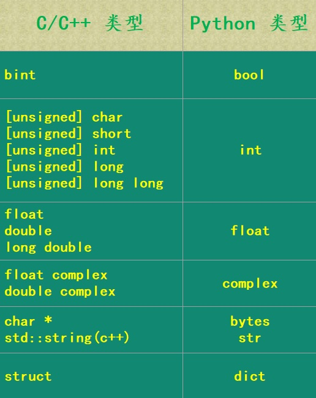

3.Cython语法介绍
1、概述
Cython 和 Python 的差别从大方向上来说无非两个，
- 运行时解释和预先编译；
- 动态类型和静态类型。
2、解释执行 VS 编译执行
对比一下 Python 虚拟机执行 Python 代码和操作系统执行已经编译的 C 代码之间的差别:
2.1 Python执行过程
Python代码在运行之前，会先被编译成 pyc 文件（里面存储的是 Python 底层的PyCodeObject 对象），然后读取里面的 PyCodeObject 对象，执行内部的字节码。而字节码是能够被 Python 虚拟机解释或者执行的基础指令集，并且虚拟机独立于平台，因此在一个平台生成的字节码可以在任意平台运行。
虚拟机将一个高级字节码翻译成一个或者多个可以被操作系统执行、最终被CPU执行的低级操作（指令）。这种虚拟化很常见并且十分灵活，可以带来很多好处：其中一个好处就是不会被挑剔的编译器嫌弃（相较于编译型语言，在一个平台编译的可执行文件在其它平台上可能就用不了了），而缺点是运行速度比本地编译好的代码慢。
2.2 C执行过程
在 C 的角度，由于不存在虚拟机或者解释器，因此也就不存在所谓的高级字节码。C 代码会被直接翻译、或者编译成机器码，可以直接以一个可执行文件或者动态库（dll 或者 so）的形式存在。但是注意：它依赖于当前的操作系统，是为当前平台和架构量身打造的，因为可以直接被 CPU 执行，而且级别非常低（伴随着速度快），所以它与所在的操作系统是有关系的。
2.3 扩展模块
Windows 中存在dll（动态链接库）、Linux中存在 so（共享文件）。如果只是 C 或者 C++、甚至是是 Go 等等编写的普通源文件，然后编译成 dll 或者 so，那么这两者可以通过 ctypes 调用，但是无法通过 import 导入。如果你强行导入，那么会报错：
1 | ImportError: dynamic module does not define module export function |
但是如果是遵循 Python/C API 编写，然后使用 Python 编译成扩展模块的话，尽管该扩展模块在 Linux 上也是 .so、Windows 上是 pyd（pyd也是个dll），但它们是可以直接被 Python 解释器识别被导入的。
3、动态类型 VS 静态类型
Python 语言和 C、C++ 之间的另一个重要的差异就是：前者是动态类型，后者是静态类型。
静态类型语言要求在编译的时候就必须指定变量的类型，经常会通过显式的声明一个变量来完成这一点，或者在某些情况下编译器会自动推断变量的类型。另一方面，如果一旦声明某个变量，那么之后此作用域该中变量的类型就不可以再改变了。
看起来限制还蛮多的，那么静态类型可以带来什么好处呢？除了编译时的类型检测，编译器也可以根据静态类型生成适应相应平台的高性能机器码。
动态语言（针对于 Python）则不一样了，对于动态语言来说，类型不是和变量绑定的，而是和对象绑定的，变量只是一个指向对象的指针罢了。因此 Python 中如果想创建一个变量，那么必须在创建的同时赋上值，不然 Python 不知道这个变量到底指向哪一个对象。而像 C 这种静态语言，可以创建一个变量的同时不赋上初始值，比如：int n，因为已经知道 n 是一个 int 类型了，而且分配的空间大小已经确定了。
并且对于动态语言来说，变量即使在同一个作用域中也可以指向任意的对象。并且我们说 Python 中的变量是一个指针，比如：a = 666，相当于创建了一个整型 666，然后让 a 这个变量指向它；如果再来一个 a = “cython”，那么会再创建一个字符串，然后让 a 指向这个字符串，或者说 a 不再存储整型 666 的地址，而是存储新创建的字符串的地址。
所以在运行 Python 程序时，解释器要花费很多时间来确认要执行的低阶操作，并抽取相应的数据。考虑到 Python 设计的灵活性，解释器总是要一种非常通用的方式来确定相应的低阶操作，因为 Python 中的变量在任意时刻可以有任意类型。以上便是所谓的动态解析，而 Python 的通用动态解析是缓慢的。还是以 a + b 为栗：
1. 解释器要检测 a 引用的对象的类型，这在C一级至少需要一次指针查找。2. 解释器从该类型中寻找加法方法的实现，这可能一个或者多个额外的指针查找和内部函数调用。3. 如果解释器找到了相应的方法，那么解释器就有了一个实际的函数调用。4. 解释器会调用这个加法函数，并将 a 和 b 作为参数传递进去。5. 我们说 Python 中的对象在C中都是一个结构体，比如：整型在 C 中是 PyLongObject，内部有引用计数、类型、ob_size、ob_digit，这些成员是什么不必关心，总之其中一个成员肯定是存放具体的值的，其他成员是存储额外的属性的。而加法函数显然要从这两个结构体中筛选出实际的数据，显然这需要指针查找以及将数据从 Python 类型转换到 C 类型。如果成功，那么会执行加法的实际操作；如果不成功，比如类型不对，发现 a 是整型但 b 是个字符串，就会报错。6. 执行完加法操作之后，必须将结果再转回 Python 中的对象，然后获取它的指针、转成 PyObject * 之后才能够返回。
而 C 语言面对 a + b 这种情况，表现则是不同的。因为 C 是静态编译型语言，C 编译器在编译的时候就决定了执行的低阶操作和要传递的参数数据。在运行时，一个编译好的 C 程序几乎跳过了 Python 解释器要必须执行的所有步骤。对于 a + b，编译器提前就确定好了类型，比如整型，那么编译器生成的机器码指令是寥寥可数的：将数据加载至寄存器，相加，存储结果。
所以我们看到编译后的 C 程序几乎将所有的时间都只花在了调用快速的 C 函数以及执行基本操作上，没有 Python 的那些花里胡哨的动作。并且由于静态语言对变量类型的限制，编译器会生成更快速、更专业的指令，这些指令是为其数据量身打造的。因此某些操作，使用 C 语言可以比使用 Python 快上几百倍甚至几千倍，这简直再正常不过了。
因此 Cython 在性能上可以带来如此巨大的提升的原因就在于，它将静态类型引入 Python 中，静态类型将 运行时的动态解析 转化成 基于类型优化的机器码。
另外，在 Cython 之前我们只能通过在 C 中重新实现 Python 代码来从静态类型中获益，也就是用 C 来编写所谓的扩展模块。而 Cython 可以让我们很容易地写类似于 Python 代码的同时，还能使用 C 的静态类型系统。而我们下面将要学习的第一个、也是最重要的 Cython 关键字：cdef，它是我们通往 C 性能的大门。
4、通过cdef进行静态类型声明
Python 中声明变量的方式在 Cython 中也是可以使用的，因为 Python 代码也是合法的 Cython 代码。
而对于静态类型变量，我们在 Cython 中通过 cdef 关键字并指定类型、变量名的方式进行声明。比如：
1 | cdef int i |
不仅如此，就连使用 cdef 声明变量的方式也是按照 C 的标准来的。
1 | cdef int i, j, k |
而在函数内部，cdef 也是要进行缩进的，它们声明的变量也是一个局部变量。
1 | def foo(): |
并且 cdef 还可以使用类似于 Python 中上下文的方式。
1 | def foo(): |
4.1 关于静态和常量
如果想在函数中返回一个局部变量的指针并且外部在接收这个指针之后，还能访问指针指向的值，这个时候该怎么办呢？我们知道 C 函数中的变量是分配在栈上的（不使用 malloc 函数，而是直接创建一个变量），函数结束之后变量对应的值就被销毁了，所以这个时候即使返回一个指针也是无意义的。
而如果想做到这一点，那么只需要在声明变量的同时在前面加上 static关键字，比如 static int i，这样的话 i 这个变量就不会被分配到栈区，而是会被分配到文字常量区，它的声明周期就不会随着函数的结束而结束，而是伴随着整个程序。
但是 static 并不是一个有效的 Cython 关键字，因此我们无法在 Cython 声明一个 C 的静态变量。除了 static，在C中还有一个 const，用来声明一个不可变的变量，也就是常量，一旦使用 const声明，比如 const int i = 3，那么这个 i 在后续就不可以被修改了。而在Cython中，const 是支持的。
注意：以上的 int、float 都是 C 中的类型，不是 Python 中的类型（后面会详细说），但除了 int、float 之外，还能在 Cython 中声明哪些 C 的类型呢？
首先基础类型，像 short、int、long、unsigned short、long long、size_t、ssize_t 等等都是支持的，声明变量的方式均为：cdef 类型 变量，可以声明的时候赋初始值，也可以不赋初始值（这些都是 C 中的类型）；还有指针、数组、定义类型别名、结构体、共同体、函数指针等等也是支持的，我们后面介绍的时候说。
举个栗子，如果要在 Cython 中定义一个 C 的函数指针要怎么做呢？
1 | cdef int (*signal(int (*f)(int)))(int) |
看到函数指针的声明和 C 也是一模一样的，只需在开头加上一个 cdef 而已。但是不要慌，我们一般不会定义这种函数指针，直接定义一个 Python 函数不香吗？谁没事定义这玩意儿。
4.2 Cython中的自动类型判断
在 Cython 中声明一个静态类型变量，使用 cdef 并不是唯一的方法，Cython 会对函数体中没有进行类型声明的变量自动执行类型推断。比如：for 循环中全部都是整型相加，没有涉及到其它类型的变量，那么 Cython 在自动对变量进行推断的时候会发现这个变量可以被优化为静态类型的变量。
注意：但是一个程序不会那么智能地对于一个动态类型的语言进行全方位的优化，默认情况下，Cython 只有在确认这么做不会改变代码块的语义之后才会进行类型推断。
看一下下面这个简单的函数：
1 | def automatic_inference(): |
在这个例子中，Cython 将字面量 1、3 +4j 以及变量 i、c、r 标记为通用的Python 对象。尽管这些对象的类型和 C 中的类型具有高度的相似性，但是 Cython 会保守地推断整型 i 可能无法代表 C 中的 long（C 中的整数有范围，而 Python没有、可以无限大），因此会将其作为符合 Python 代码语义的 Python 对象。而对于 d = 2.0，则可以自动推断出符合 C 中的 double，因为 Python 中的浮点数对应的值在底层就是使用一个 double 来存储的。所以最终对于用户来讲，变量 d 看似是一个 Python 中的对象，但是 Cython 在执行的时候会讲其视为 C 中的 double 以提高性能。
注意：这就是即使我们写纯 Python，cython 编译器也能进行优化的原因，因为会进行推断。但是很明显，我们不应该让 cython 编译器去推断，而是我们来明确指定对应的类型。
当然我们如果非要 cython 编译器去猜，也是可以的，而且还可以通过 infer_types 编译器指令，在一些可能会改变 Python 代码语义的情况下给 Cython 留有更多的余地来推断一个变量的类型。比如：当两个整型相加时可能导致的结果溢出，因为 Python 中的整型在底层是使用数组来存储的，所以不管多大都可以相加，只要内存足够。但是在 C 中不可以，因为 C 中的变量是有明确的类型的，既然是类型，那么空间在一开始就已经确定了。比如 int 使用4个字节，而一旦结果使用4个字节无法表示的时候，就会得到一个意向不到的错误结果。所以如果非要 Cython 来类型推断的话，我们是需要给其留有这样的余地的。
对于一个函数如果启动这样的类型推断的话，可以使用 infer_types 的装饰器形式。不过还是那句话，应该手动指定类型，而不是让 cython 编译器去推断，因为我们是代码的编写者，类型什么的自己最清楚。
1 | cimport cython |
这里出现了一个新的关键字叫做 cimport，至于它的含义我们后面会说，目前只需要知道它和 import 关键字一样，是用来导入模块的即可。然后我们通过装饰器 @cython.infer_types(True)，启动了相应的类型推断，也就是给 Cython 留有更多的猜测空间。
注意：当 Cython 支持更多的推断的时候，变量 i 被类型化为 C long；d 和之前一样是 double，而 c 和 r 都是复数变量，复数则依旧使用 Python 中的复数类型。但是注意：并不代表启用 infer_types 时，就万事大吉了；我们知道在不指定 infer_types 的时候，Cython 在推断类型的时候显然是采用最最保险的方法、在保证程序正确执行的情况下进行优化，不能因为为了优化而导致程序出现错误，显然正确性和效率之间正确性是第一位的。而整型由于存在溢出的问题，所以 Cython 是不会自动转化为 C long 的；但是我们通过 infer_types 启动了更多的类型推断，因此在不改变语义的情况下 Cython 是会将整型推断为C long的，但是溢出的问题它不知道，所以在这种情况下是需要我们来要负责确保整型不会出现溢出。
5、Cython中的C指针
可以使用 C 的语法在 Cython 中声明一个 C 指针。
1 | cdef double a |
既然可以声明指针变量，那么说明能够取得某个变量的地址才对。是的，在 Cython 中通过 &获取一个变量的地址。
1 | cdef double a = 3.14 |
问题来了，既然可以获取指针，那么能不能通过 * 来获取指针指向的值呢？答案可以获取值，但是方式不是通过 * 来实现。我们知道在 Python 中，*有特殊含义，没错，就是 *args 和 *kwargs，它们允许函数中接收任意个数的参数，并且通过 \ 还可以对一个序列进行解包。因此对于 Cython 来讲，无法通过 *p 这种方式来获取 p 指向的内存。在 Cython 中获取指针指向的内存的方式是通过类似于 p[0] 这种方式，p 是一个指针变量，那么 p[0] 就是 p 指向的内存。
1 | # cython_test.pyx |
这个模块叫做 cython_test.pyx，然后在另一个 py 文件中导入。
1 | import pyximport |
pyx 里面有 print 语句，因此导入的时候就自动打印了，看到 a 确实被修改了。因此在 Cython 中可以通过 & 来获取指针，也可以通过 指针[0] 的方式获取指针指向的内存。唯一的区别就是C里面是使用 * 的方式，而在 Cython 里面如果使用 *b = 6.28 这种方式在语法上则是不被允许的。
而 C 和 Cython 中关于指针的另一个区别就是该指针在指向一个结构体的时候，假设一个结构体指针叫做 s，里面有两个成员 a 和 b，都是整型。那么对于 C 而言，可以通过 s -> a + s -> b 的方式将两个成员相加，但是对于 Cython 来说，则是 s.a + s.b。看到这个和 Go 是类似的，无论是结构体指针还是结构体本身，都是使用 . 的方式访问结构体内部成员。
6、静态类型变量和动态类型变量的混合
Cython 允许静态类型变量和动态类型变量之间进行赋值，这是一个非常强大的特性。它允许使用动态的 Python 对象，并且在决定性能的地方能很轻松地将其转化为快速的静态对象。
假设有几个静态的 C int 要组合成一个 Python 中的元组，Python/C API 创建和初始化的话很简单，但是却很乏味，需要几十行代码以及大量的错误检查；而在Cython中，只需要像 Python 一样做即可：
1 | # cython_test.pyx |
然后我们来导入一下：
1 | import pyximport |
看到执行的过程很顺畅，这里要说的是：a、b、c 都是静态的整型，Cython 允许使用它们创建动态类型的 Python 元组，然后将该元组分配给 t。所以这个小栗子便体现了 Cython 的美丽和强大之处，可以以显而易见的方式创建一个元组，而无需考虑其它情况。因为 Cython 的目的就在于此，希望概念上简单的事情在实际操作上也很简单。
虽说如此，但并不是所有东西都可以这么做的。上面的例子之所以有效，是因为Python int 和 C int（short、long等等）有明显的对应关系。如果是指针呢？首先Python 中没有指针这个概念，或者说指针被 Python 隐藏了，只有解释器才能操作指针。因此在 Cython 中，不可以在函数中返回一个指针，以及打印一个指针、指针作为 Python 的动态数据结构（如：元组、列表、字典等等）中的某个元素，这些都是不可以的。
回到元组的那个例子，如果 a、b、c 是一个指针，那么必须要在放入元组之前取消它们的引用，或者说放入元组中的只能是它们指向的值。因为 Python 在语法层面没有指针的概念，所以不能将指针放在元组里面。同理：假设 cdef int a = 3，可以是cdef int *b = &a，但绝不能是 b = &a。因为直接 b = xxx 的话，那么 b 是 Python 中的变量，其类型则需要根据值来推断，然而值是一个指针，所以这是不允许的。
但是 cdef int b = a 和 b = a 则都是合法的，因为 a 是一个整型，C 中的整型是可以转化成 Python 中的整型的，因此编译的时候会自动转化。只不过如果是前者那么相当于创建了一个 C 的变量 b，Python 导入的时候无法访问；如果是后者，那么相当于创建一个 Python 变量 b，Python 导入的时候可以访问。
举个例子：
1 | cdef int a |
再举个例子：
1 | # cython_test.pyx |
看到 a 和 b 是 C 中的类型，无法访问，但变量 c 是可以访问的。不过问题又来了，看一下下面的几种情况：
先定义一个C的变量，然后给这个变量重新赋值：
1 | cdef int a = 3 |
先定义一个 Python 变量，再定义一个同名的 C 变量：
1 | b = 3 |
先定义一个 Python 变量，再定义一个同名的 Python 变量：
1 | cdef int a = 666 |
再来看一个栗子：
1 | num = 666 |
首先这个栗子很简单，因为 a 和 b 指向了同一个对象，但如果是下面这种情况呢？
1 | cdef int num = 666 |
会发现打印的是 *False，因为此时这个 num 是 C 中变量，然后 a = num 会先根据 num 的值创建一个 Python 中的整数，然后再让 a 指向它；同理 b 也是如此，而显然这会创建两个不同 666，虽然值一样，但是地址不一样。
注意：这就是 Cython 的方便之处，不需要我们自己转化，而是在编译的时候会自动转化。当然还是按照之前说的，自动转化的前提是可以转化，也就是两者之间要互相对应（比如 Python 的 int 和 C 的 int、long，Python 的 float 和 C 的 float、double 等等）。
因为 Python int 和 C/C++ int 之间是对应的，所以 Python 会自动转化，那么其它类型呢？Python 类型和 C/C++ 类型之间的对应关系都有哪些呢？

注意：对于这些 C 的类型，Cython 有更丰富的类型来表示。
6.1 bint类型
bint 在 C 中是一个布尔类型，但其实本质上是一个整型，然后会自动转化为 Python 的布尔类型，当然 Python 中布尔类型也是继承自整型。bint 类型有着标准 C 的实现：0为假，非0为真。
1 | # cython_test.pyx |
这里要进行赋值给 Python 中的变量，不然后续无法访问。
1 | import pyximport |
6.2 整数类型与转换溢出
在 Python2 中，有 int 和 long 两种类型来表示整数。Python2 中的 int 使用 C 中的 long 来存储，是有范围的，而 Python2 中的 long 是没有范围的；但在Python3中，只有int，没有long，而所有的 int 对象都是没有范围的。
将 Python 中的整型转化成 C 中的整型时，Cython 生成代码会检测是否存在溢出。如果 C 中的 long 无法表示 Python 中的整型，那么运行时会抛出 OverflowError。
1 | # cython_test.pyx |
看到转成 C 的 int 时，如果存不下会自动尝试使用 long，如果还是越界则报错。
6.3 float类型
Python 中的 float 对应的值在 C 中也是用 double 来存储的，对于浮点来说可以放心使用。
1 | typedef struct { |
6.4 复数类型
Python 中的复数在 C 中是使用两个 double 来存储的，一个存储实部、一个存储虚部。
1 | typedef struct { |
复数不常用，了解一下即可。
6.5 bytes类型、str类型
在 Cython 中如果想创建一个字节串可以使用 bytes，而创建一个字符串则是 str 或者 unicode。没错，这些都是 Python 中的类型，关于 C 类型和 Python 类型在 Cython 中的表现我们后面会详细说。
1 | # cython_test.pyx |
7、使用Python类型进行静态声明
之前使用 cdef 的时候用的都是 C 中的类型，比如 cdef int、cdef float，当然 Python 中也有这两个，不过使用的确实是 C 中的类型，再或者 cdef unsigned long long 等等也是可以的。那么可不可以使用 Python 中的类型进行静态声明呢，其实细心的话会发现是可以的，因为上面使用了 cdef str 声明变量了。
不光是 str，只要是在 CPython 中实现了，并且 Cython 有权限访问的话，都可以用来进行静态声明，而 Python 中内建的类型都是满足要求的。换句话说，只要在 Python 中可以直接拿来用的，都可以直接当成 C 的类型来进行声明（bool 类型除外）。
1 | # cython_test.pyx |
可以看到得到的结果是正确的，完全可以当成 Python 中的类型来使用。这里在使用 Python 中的类型进行静态声明的时候，都赋上了一个初始值，但如果只是声明没有赋上初始值，那么得到的结果是一个 None。
注意：只要是用 Python 中的类型进行静态声明且不赋初始值，那么结果都是 None。比如：cdef tuple b; B = b，那么 Python 在打印 B 的时候得到的就是 None，而不是一个空元组。不过整型是个例外，因为 int 实际上用的是 C 里面 int，会得到一个 0，当然还有float。
为什么 Cython 可以做到这一点呢？实际上这些结构在 CPython 中都是已经实现好了的，Cython 将它们设置为指向底层中某个数据结构的 C 指针，比如：cdef tuple a，那么 a 就是一个PyTupleObject *，它们可以像普通变量一样使用，当然 Python 中的变量也是一样的，a = tuple()，那么 a 同样是一个 PyTupleObject *。
同理我们想一下 C 扩展，我们使用 Python/C API 编写扩展模块的时候，也是一样的道理，只不过还是那句话，使用 C 来编写扩展非常的麻烦，因为用 C 来开发本身就是麻烦的事情。所以 Cython 很好的解决了这一点，让我们可以将写 Python 一样写扩展，会自动地将我们的代码翻译成C级的代码。因此从这个角度上讲，Cython 可以做的，使用纯 C 来编写扩展也是完全可以做的，区别就是一个简单方便，一个麻烦。更何况使用 C 编写扩展，需要掌握Python/C API，而且还需要有 Python 解释器方面的知识，门槛还是比较高的，可能一开始掌握套路了还不觉得有什么，但是到后面当你使用 C 来实现一个 Python 中的类的时候，你就知道这是一件相当恐怖的事情了。而在 Cython 中，定义一个类仍然非常简单，像 Python 一样，我们后续系列会说。
另外使用 Python 中的类型声明变量的时候不可以使用指针的形式，比如：cdef tuple *t，这么做是不合法的，会报错：Pointer base type cannot be a Python object。此外，我们使用 cdef 的时候指定了类型，那么赋值的时候就不可以那么无拘无束了，比如：cdef tuple a = list("123") 就是不合法的，因为声明了 a 指向一个元组，但是我们给了一个字典，那么编译扩展模块的时候就会报错：TypeError: Expected tuple, got list。
这里再思考一个问题，Cython 创建的变量无法被直接访问，需要将其赋值给 Python 中的变量才可以使用。那么，在赋完值的时候，这两个变量指向的是同一个对象吗？
1 | # cython_test.pyx |
看到 a 和 b 确实是同一个对象，并且 a 在本地修改了之后，会影响到 b。毕竟两个变量指向的是同一个列表、或者 PyListObject 结构体实例，当然我们使用 del 删除一个元素也是同理。
Cython 中的变量和 Python 中的变量是等价的，那么 Python 中变量可以使用的 api，Cython 中的变量都可以使用，比如 a.insert、a.append 等等。只不过对于 int 和 float 来说，C 中也存在同名的类型，那么会优先使用 C 的类型，这也是我们期望的结果。
而且一旦使用的是 C 里面的类型，比如
cdef int = 1;cdef float b = 22.33，那么 a 和 b 就不再是 PyLongObject * 和 PyFloatObject * 了，因为它们用的不是 Python 中的类型，而是 C 中的类型。所以 a 和 b 的类型就是 C 中实打实的 int 和 float，并且 a 和 b 也不再是一个指针，它们代表的就是具体的整数和浮点数。为什么要在使用 int 和 float 的时候，要选择 C 中 int 和 float 呢？答案很好理解，因为 Cython 本身就是用来加速计算的，而提到计算，显然避不开 int 和 float，因此这两位老铁默认使用的 C 里面类型。事实上单就 Python 中的整型和浮点来说，在运算时底层也是先转化成 C 的类型，然后再操作，最后将操作完的结果再转回 Python 中的类型。而如果默认就使用C的类型，就少了转换这一步了，可以极大提高效率。
然而即便是 C 中的整型和浮点型，在操作的时候和 C 还是有一些不同的，主要就在于除法和取模。
当操作的是 Python 的 int 时，那么结果是不会溢出的；如果操作的是静态的 C 对象，那么整型可能存在溢出，这些我们是知道的。但是除此之外，还有一个最重要的区别就是除法和取模，在除法和取模上，C 的类型使用的却不是 C 的标准。举个栗子：
当使用有符号整数计算模的时候，C 和 Python 有着明显不同的行为：比如 -7 % 5，如果是 Python 的话那么结果为 3，C 的话结果为 -2。显然 C 的结果是符合我们正常人思维的，但是为什么 Python 得到的结果这么怪异呢？
事实上不光是 C，Go、Js 也是如此，计算
-7 % 5的结果都是-2，但 Python 得到 3 主要是因为其内部的机制不同。我们知道a % b，等于a - (a / b) * b，其中a / b表示两者的商。比如 7 % 2，等于 7 - (7 / 2) * 2 = 7 - 3 * 2 = 1，对于正数，显然以上所有语言计算的结果都是一样的。而负数出现差异的原因就在于：C 在计算 a / b 的时候是截断小数点，而 Python 是向下取整。比如上面的 -7 % 5，等于 -7 - (-7 / 5) * 5。-7 / 5 得到的结果是负的一点多，C的话直接截断得到 -1，因此结果是 -7 - (-1) * 5 = -2；但 Python 是向下取整，负的一点多变成 -2，因此结果变成了 -7 - (-2) * 5 = 3。
1 | # Python中 / 默认是得到浮点, 整除的话使用 // |
因此在除法和取模方面，尤其需要注意。另外即使在Cython中，也是一样的。
1 | cdef int a = -7 |
以上打印的结果都是 -2，说明 Cython 默认使用 Python 的语义进行除法，当然还有取模，即使操作的对象是静态类型的 C 标量。这么做原因就在于为了最大程度的和 Python 保持一致，如果想要启动 C 语义都需要显式地进行开启。然后我们看到 a 和 b 是静态类型的 C 变量，它们也是可以使用 // 的，因为 Cython 的目的就像写Python一样。但是我们看到无论是 a / b 还是 a // b 得到的都是 -2，这很好理解。因为在 Cython 中 a 和 b 都是静态的 int，而在C中对两个 int 使用加减乘除得到的依旧是一个 int，因此会将中间得到的浮点数变成整型，至于是直接截断还是向下取整则是和 Python 保持一致的，是按照 Python 的标准来的。至于 a // b 对于整型来说就更不用说了，a // b 本身就表示整除，因此在 Cython 中两个 int 之间使用 / 和使用 // 是一样的。然后我们再来举个浮点数的例子。
1 | cdef float a = -7 |
此时的 a 和 b 都是浮点数，那么 a / b 也是个浮点，所以没有必要截断了，小数位会保留；而 a // b虽然得到的也是浮点（只要 a 和 b 中有一个是浮点，那么 a / b 和 a // b 得到的也是浮点），但它依旧具备整除的意义，所以 a // b 得到结果是 -2.0，然后赋值给一个 float 变量，还是 -2.0。不过为什么 a // b 得到的是 -2.0，可能有人不是很明白，因此关于 Python 中 / 和 // 在不同操作数之间的差异，再举个栗子看一下：
1 | 7 / 2 == 3.5 # 3.5, 很好理解 |
所以 Python 的整除或者说地板除还是比较奇葩的，主要原因就在于其它语言是截断（小数点后面直接不要了），而 Python 是向下取整。如果是结果为正数的话，截断和向下取整是等价的，所以此时基本所有语言都是一样的；而结果为负数的话，那么截断和向下取整就不同了，因为 -3.14 截断得到的是 -3、但向下取整得到的不是 -3，而是 -4。因此这一点务必要记住，算是 Python 的一个坑吧。话说如果没记错的话，好像只有 Python 采用了向下取整这种方式，别的语言（至少C、js、Go）都是截断的方式。
还有一个问题，那就是整型和浮点型之间可不可以相互赋值呢？先说结论：
整型赋值给浮点型是可以的但是浮点型赋值给整型不可以
1 | # 7是一个纯数字, 那么它既可以在赋值 int 类型变量时表示整数7 |
使用 cdef int、cdef float 声明的变量不再是指向 Python 中 int对象、float对象的PyLongObject *、PyFloatObject *，其类型就是 C 中的 int、float。尽管整型没有考虑溢出，但是它在做运算的时候遵循 Python 的规则(主要是除法)，那么可不可以让其强制遵循C的规则呢？
1 | cimport cython |
除了这种方式，还可以下面下面两种方式来指定。
- 通过上下文管理器的方式
1 | cimport cython |
- 通过注释的方式进行全局声明
1 | # cython: cdivision=True |
如果什么都不指定的话，执行一下看看。
1 | def divides(int a, int b): |
此时就和Python语义是一样的了。
总结：
使用 cdef int、cdef float 声明的变量不再是 Python 中的 int、float，也不再对应 CPython 中的 PyLongObject * 和PyFloatObject *，而就是 C 中的 int 和 float。虽然是 C 中的 int 和 float，并且也没有像 Python 一样考虑整型溢出的问题(实际上溢出的情况非常少，如果可能溢出的话，就不要使用 C 中的 int 或者 long，而是使用 Python 的 int)，但是在进行运算的时候是遵循 Python 的语义的。因为 Cython 就是为了优化 Python 而生的，因此在各个方面都要和 Python 保持一致。但是也提供了一些方式，禁用掉 Python 的语义，而是采用 C 的语义。方式就是上面说的那三种，它们专门针对于整除和取模，因为加减乘都是一样的，只有除和取模会有歧义。
不过这里还有一个隐患，因为在除法的时候使其遵循 C 的语义，而 C 不会对分母为 0 的情况进行考虑，而 Python 则会进行检测。如果分母为 0，在 Python 中会抛出：ZeroDivisionError，在C中会可能导致未定义的行为（从硬件损坏和数据损害都有可能，好吓人，妈妈我怕）。
Cython 中还有一个 cdivision_warnings，使用方式和 cdivision 完全一样，表示：当取模的时候如果两个操作数中有一个是负数，那么会抛出警告。
1 | cimport cython |
另外这里的警告是同时针对 Python 和 C 的，即使我们再使用一层装饰器 @cython.cdivision(True) 装饰、将其改变为 C 的语义的话，也一样会弹出警告的。 cdivision_warnings 意义不是很大，了解一下即可。
8、用于加速的静态类型
上面介绍了在 Cython 中使用 Python 的类型进行声明，这咋一看有点古怪，为什么不直接使用 Python 的方式创建变量呢？a = (1, 2, 3) 不香么？为什么非要使用 cdef tuple a = (1, 2, 3) 这种形式呢？答案是 “为了遵循一个通用的 Cython 原则”：提供的静态信息越多，Cython 就越能优化结果。所以 a = (1, 2, 3)，这个 a 可以指向任意的对象，但是 cdef tuple a = (1, 2, 3) 的话，这个 a 只能指向元组，在明确了类型的时候，执行的速度会更快。
看一个列表的例子：
1 | lst = [] |
我们只看 lst.append(1) 这一行，显然它再简单不过了，但是你知道 Python 解释器是怎么操作的吗？
检测类型，Python 中变量是一个 PyObject *，因为任何对象在底层都嵌套了 PyObject 这个结构体，但具体是什么类型则需要一步检索才知道。通过
PyTypeObject *type = lst -> ob_type，拿到其类型。转化类型，PyListObject *lst = (PyListObject *)lst
查找属性，调用的是 append 方法，因此调用 PyObject_GetAttrString，参数就是字符串 “append”，找到指向该方法的指针。如果不是 list，但是内部如果有 append 方法也是可以的，然后进行调用。
因此看到一个简单的 append，Python 内部是需要执行以上几个步骤的，但如果实现规定好了类型呢？
1 | cdef list lst = [] |
那么此时会有什么差别呢？对 list 对象进行 append 的时候底层调用的 C 一级的函数是 PyList_Append，通过索引赋值的时候调用的是 PyList_SetItem，索引取值的时候调用的是 PyList_GetItem，等等。每一个操作在 C 一级都指向了一个具体的函数，如果提前知道了类型，那么 Cython 生成的代码可以将上面的三步变成一步，没错，直接通过 C api 让 lst.append 指向 PyList_Append 这个 C 一级的函数，这样省去了类型检测、转换、属性查找等步骤，直接调用调用即可。
所以列表解析比普通的 for 循环快也是如此，因为 Python 对内置的结构非常熟悉，当使用的是列表解析式，那么也同样会直接指向 PyList_Append 这个 C 一级的函数。
同理在 Cython 中使用 for 循环的时候，也是如此。如果循环一个可迭代对象，而这个可迭代对象内部的元素都是同一种类型（假设是 dict 对象），那么在循环之前可以先声明循环变量的类型，比如：cdef dict item，然后在 for item in xxx，这样也能提高效率。
9、引用技术和静态字符串
Python 会自动管理内存的，解释器 CPython 通过直接的引用计数来判断一个对象是否应该被回收，但是无法解决循环引用，于是 Python 中又提供了垃圾回收来解决这一点。
这里多提一句 Python 中的 gc，Python 判断一个对象回收的标准就是它的引用计数是否为 0，为 0 就被回收。但是这样无法解决循环引用，于是 Python 中的 gc 就是来解决这个问题的。那么它是怎么解决的呢？
首先什么样的对象会发生循环引用呢？不用说，显然是可变对象，比如：列表、类的实例对象等等，像 int、str 这些不可变对象肯定是不会发生循环引用的，单纯的引用计数足以解决。
而对于可变对象，Python 会通过分代技术，维护三个链表：零代链表、一代链表、二代链表。将那些可变对象移到链表上，然后通过三色标记模型找到那些发生循环引用的对象，将它们的引用计数减一，从而解决循环引用的问题。不过有人好奇了，为什么是三个链表，一个不行吗？事实上，Python 检测循环引用、或者触发一次 gc 还是要花费一些代价的，对于某些经过 gc 的洗礼之后还活着的对象，我们认为它们是比较稳定的，不应该每次触发 gc 就对它们进行检测。所以 Python 会把零代链表中比较稳定的对象移动到一代链表中，同理一代链表也是如此，不过最多就是二代链表，没有三代链表。当清理零代链表的次数达到 10 次的时候，会清理一次一代链表；清理一代链表达到 10 次的时候，会清理一次二代链表。
而 Cython 处理所有的引用计数问题，确保 Python 对象（无论是Cython动态声明、还是Python动态声明）在引用计数为 0 时被销毁。
很好理解，就是内存管理的问题 Cython 也会负责的。其实不用想也大概能猜到 Cython 会这么做，毕竟
cdef tuple a = (1, 2, 3)和a = (1, 2, 3)底层都对应 PyTupleObject *，只不过后者在操作的时候需要先通过 PyObject * 获取类型(PyTupleObject \*)再转化罢了，而前者则省略了这一步。但它们底层都是 CPython 中的结构体，所以内存都由解释器管理。还是那句话，Cython 代码是要被翻译成 C 的代码的，在翻译的时候会自动处理内存的问题，当然这点和 Python 也是一样的。
但是当 Cython 中动态变量和静态变量混合时，那么内存管理会有微妙的影响。举个栗子：
1 | # char *, 在 Cython 只能接收一个非 ascii 字符串, 或者 bytes 对象 |
那么如何解决这一点呢？答案是使用变量保存起来就可以了。
1 | # 这种做法是完全合法的, 因为我们这个 bytes 对象是被 name1 指向了 |
因此关于 char * 来总结一下：
cdef char *buf = "cython".encode("utf-8") 理论上是合理的，但是由于这个对象创建完之后就被销毁，所以不行。这个是在编译的时候就会被检测到，因为这属于内存方面的问题。cdef char *buf = "cython" 是可以的，因为此时 "cython" 会被解释成 C 中的字符串。name = "cython".encode("utf-8"); cdef char *buf = name 也可以的，因为 name 指向了字节对象，所以不会被销毁，能够提取它的 char 指针。name = "cython"; cdef char *buf = name 则不行，原因在于我们将 "cython" 赋值给了 name，那么这个 name 显然就是 Python 中的字符串，不可以将 Python 中的字符串赋值给 C 中的 char *，只能赋字节串，因此会报错。但该错误是属于赋值出错了，因此它是一个运行时错误，所以编译成扩展模块的时候是可以正常通过的。
不过还是那句话，只有当直接给 char * 变量赋一个 ascii 字符串的时候，才会被当成是 C 中的字符串，如果赋了非 ascii 字符串、或者是 ascii 字符串用变量接收了并且赋的是变量，那么也是不合法的。因此建议，字符串直接使用 str 即可，没有必要使用 char *。
那么下面的代码有没有问题呢？如果有问题该怎么改呢？
1 | word1 = "hello".encode("utf-8") |
会不会出问题呢？显然会有大问题，尽管 word1 和 word2 指向了相应的 bytes 对象，但是 word1 + word2 则是会创建一个新的 bytes 对象，这个新的 bytes 对象可没有人指向。因此提取其 char * 之后也没用，因为这个新创建的 bytes 对象会被直接销毁。
而解决的办法有两种：
tmp = word1 + word2; cdef char *word = tmp，使用一个动态的方式创建一个变量指向它，确保它不会被销毁。cdef bytes tmp = word1 + word2; cdef char *word = tmp，道理一样，只不过使用的是静态声明的方式。
另外，其实像上面这种情况并不常见，基本上只有 char * 会有这个问题，因为它比较特殊，底层使用一个指针来表示字符串。和 int、long 不同，cdef long a = 123，这个 123 直接就是 C 中的 long，可以直接使用；但将 Python 中的 bytes 对象赋值给 char *，在 C 的级别 char * 所引用的数据还是由 CPython 进行管理的，char * 缓冲区无法告诉解释器还有一个对象（非 Python 对象）引用它，这就导致了它的引用计数不会加1，而是创建完之后就会被销毁。
所以需要提前使用 Python 中的变量将其保存起来，这样就不会删除了。而只有char *会面临这个问题，而其它的则无需担心。但是我们完全可以不使用 char *，使用 str 和 bytes 难道不好吗？
10、Cython的函数
上面所学的关于动态变量和静态变量的知识也适用于函数，Python 的函数和 C 的函数都有一些共同的属性：函数名称、接收参数、返回值，但是 Python 中的函数更加的灵活这强大。因为 Python 中一切皆对象，所以函数也是一等公民，可以随意赋值、并具有相应的状态和行为，这种抽象是非常有用的。
一个Python函数可以：
在导入时和运行时动态创建使用 lambda 关键字匿名创建在另一个函数(或其它嵌套范围)中定义从其它函数中返回作为一个参数传递给其它函数使用位置参数和关键字参数调用函数参数可以使用默认值
C函数调用开销最小，比Python函数快几个数量级。一个C函数可以：
可以作为一个参数传递给其它函数，但这样做比 Python 麻烦的多不能在其它函数内部定义，而这在 Python 中不仅可以、而且还非常常见，毕竟 Python 中常用的装饰器就是通过高阶函数加上闭包实现的，而闭包则可以理解为是函数的内部嵌套其它函数。具有不可修改的静态分配名称只能接受位置参数函数参数不支持默认值
正所谓鱼和熊掌不可兼得，Python 的函数调用虽然慢几个数量级（即使没有参数），但是它的灵活性和可扩展性都比 C 强大很多，这是以效率为代价换来的。而 C 的效率虽然高，但是灵活性没有 Python 好，这便是各自的优缺点。
10.1 在Cython中使用def关键字定义Python函数
Cython 支持使用 def 关键字定义一个通用的 Python 函数，并且还可以按照我们预期的那样工作。比如：
1 | # cython_test.pyx |
显然这是一个 Python 语法的函数，参数 n 是接收一个动态的 Python 变量，但它在 Cython 中也是合法的，并且表现形式是一样的。
即使是普通的 Python 函数，也可以通过 cython 进行编译，但是就调用而言，这两者是没有任何区别的。不过说执行扩展里面的代码时，已经绕过了解释器解释字节码这一过程；但是 Python 代码则不一样，它是需要被解释执行的，因此在运行期间可以随便动态修改内部的属性。举个栗子就很清晰了：
Python 版本：
1 | # 文件名：a.py |
Cython 版本：
1 | def foo(): |
看到报错了：’builtinfunctionor_method’ 的属性 `__name`不可写，因为 Python 中的函数是一个类型函数，它是通过解释器的，所以它可以修改自身的一些属性。但是 Cython 代码在编译之后，变成了 builtin_function_or_method，绕过了解释这一步，因为不能对它自身的属性进行修改。事实上，Python 的一些内置函数也是不能修改的。
1 | try: |
这些内置的函数直接指向了底层 C 一级的函数，因此它们的属性是不能够被修改的。
回到刚才的用递归计算阶乘的例子上来，显然 rec 函数里面的 n 是一个动态变量，如果想要加快速度，就要使用静态变量，也就是规定好类型。
1 | def rec(long n): |
此时当我们传递的时候，会将值转成 C 中的 long，如果无法转换则会抛出异常。
另外在 Cython 中定义任何函数，都可以将动态类型的参数和静态类型的参数混合使用。 Cython 允许静态参数具有默认值，并且可以按照位置参数或者关键字参数的方式传递。
1 | # 这样的话, 我们就可以不传参了, 默认 n 是 20 |
但是遗憾的是，即便使用了 long n 这种形式定义参数，效率也不会有提升。因为这里的 rec 还是一个 Python 函数，它的返回值也是一个 Python 中的整型，而不是静态的 C long。因此在计算 n * rec(n - 1) 的时候，Cython 必须生成大量代码，从返回的 Python 整数中提取底层的 C long，然后乘上静态类型的变量 n，最后再将结果得到的 C long 打包成 Python 的整型。所以整个过程基本上是没什么变化的。
那么如何才能提升性能呢？显然这明显可以不使用递归而是使用循环的方式，当然这个我们不谈，因为这个 Cython 没啥关系。想做的是告诉Cython：”这是一个 C long，你要在不创建任何 Python 整型的情况下计算它，会将你最终计算好的结果包装成 Python 中的整型，总之你计算的时候不需要 Python 整数参与。”
10.2 在Cython中使用cdef关键字定义C函数
cdef 关键字除了创建变量之外，还可以创建具有 C 语义的函数。cdef 定义的函数其参数和返回值通常都是静态类型的，它们可以处理 C 指针、结构体、以及其它一些无法自动转换为 Python 类型的 C 类型。所以把 cdef 定义的函数看成是长得像 Python 函数的 C 函数即可。
1 | cdef long rec(long n): |
之前的例子就可以改写成上面这种形式，看到结构非常相似，主要区别就是指定了返回值的类型。
但是此时的函数是没有任何 Python 对象参与的，因此不需要从 Python 类型转化成 C 类型。该函数和纯 C 函数一样有效，调用函数的开销最小。另外，即便是 cdef 定义的函数，我们依旧可以创建 Python 对象和动态变量，或者接收它们作为参数也是可以的。但是 cdef 编写的函数应该是在，为了获取 C 的效率、不需要动态变量的情况下编写的。
当然在 Cython 源文件中可以使用 cdef 定义函数、也可以是用 def 定义函数，这是显然的。cdef 函数返回的类型可以是任何的静态类型（如：指针、结构体、C数组、静态Python类型）。如果省略了返回值，那么默认是object 比如:cdef f1():等价于cdef object f1()，也就是说此时返回任何对象都是可以的。关于返回值的问题，举个例子。
1 | # 合法, 返回的是一个 list 对象 |
使用 cdef 定义的函数，可以被其它的函数（cdef 和 def 都行）调用，但是 Cython 不允许从外部 Python 代码来调用 cdef 函数，之前使用 cdef 定义的变量也是如此。因为 Python 中函数也可以看成是变量，所以通常会定义一个 Python 中的函数，然后让 Python 中的函数来调用 cdef 定义的函数，所以此时的 Python 函数就类似于一个包装器，用于向外界提供一个访问的接口。
1 | cdef long _rec(long n): |
这种方式是最快的，之前的方式都有大量的 Python 开销。
但不幸的时，这种方式有一个弊端，相信肯定都能想到。那就是 C 中的整数类型（int、long等等）都存在精度问题，而 Python 的整型是不受限制的，只要内存足够。解决办法就是确保不会溢出，或者将 long 换成double。
这是一个很普遍的问题，基本上所有的语言都是这样子，只有 Python 在表示整型的时候是没有限制的。有些时候，Python 数据和 C 数据并不能总是实现完美的映射，需要意识到 C 的局限性。这也是为什么 Cython 不会擅自把 Python 中的 int 变成 C 中的 int、long，因为这两者在极端情况下不是等价的。但是绝大多数情况下，使用 long 是足够的，甚至都不需要 long，int 也足够，至少我平时很少遇见 long 存不下的数字，或者实在不行就用double嘛。
10.3 使用cpdef结合def、cdef
Cython 定义一个函数可以使用 def 和 cdef，但是还有第三种定义函数的方式，使用 cpdef关键字声明。cpdef 是 def 和 cdef 的混合体，结合了这两种函数的特性，并解决了局限性。之前使用 cdef 定义了一个函数 _rec，但是它没法直接被外部访问，因此又定义了一个 Python 函数 rec 供外部调用，相当于提供了一个接口。所以我们需要定义两个函数，一个是用来执行逻辑的（C版本），另一个是让外部访问的（Python版本，一般这种函数称之为 Python 包装器。很形象，C 版本不能被外部访问，因为定义一个 Python 函数将其包起来）。
但是 cpdef 定义的函数会同时具备这两种身份，怎么理解呢？一个 cpdef 定义的函数会自动为我们提供上面那两个函数的功能，它们具备相同的名称。从 Cython 中调用函数时，会调用 C 的版本，在外部的 Python 中导入并访问时，会调用包装器。这样的话，cpdef 函数就可以将 cdef 函数的性能和 def 函数的可访问性结合起来了。
因此上面那个例子，我们就可以改写成如下：
1 | cpdef long rec(long n): |
如果定义两个函数，这两个函数还不能重名，但是使用 cpdef 就不需要关心了，这样可以更方便。
10.4 inline cdef and cpdef functions
在 C 和 C++ 中，定义函数时还可以使用一个可选的关键字 inline，这个 inline 是做什么的呢？函数调用是有开销的（话说你效率这么高了，还在乎这一点啊），而使用 inline 关键字定义的函数，那么代码会被放在符号表中，在使用时直接进行替换（像宏一样展开），没有了调用的开销，提高效率。
Cython 同样支持 inline 关键字，使用时只需要将 inline 放在 cdef 或者 cpdef 后面即可，但是不能放在 def 后面。
1 | cpdef inline unsigned long rec(int n): |
inline 如果使用得当，那么可以提高性能，特别是在深度嵌套循环中调用的小型内联函数。因为它们会被多次调用，这个时候通过 inline 可以省去函数调用的开销。
使用 cpdef 有一个局限性，那就是它要同时兼容 Python 和 C：意味着它的参数和返回值类型必须同时兼容 Python 类型和C类型。但，并非所有的 C 类型都可以用 Python 类型表示，比如：C 指针、void、C 数组等等，它们不可以作为 cpdef 定义的函数的参数类型和返回值类型。
11、函数和异常处理
def 定义的函数在 C 的级别总是会返回一个 PyObject*，这个是恒定的不会改变，因为 Python 中的所有变量在底层都是一个 PyObject *。它允许 Cython 正确地从 def 函数中抛出异常，但是 cdef 和 cpdef 可能会返回一个非 Python 类型，因此此时则需要一些其它的异常提示机制。
1 | cpdef int divide_ints(int i, int j): |
如果这里的 j传递了一个 0，会引发 ZeroDivisionError，但是这个异常却没有办法传递给它的调用方法。
1 | import cython_test |
异常没法传递，换句话说就是异常没有办法向上抛，即使检测到了这个异常。最终会忽略警告信息，并且也会返回一个错误的值 0。
为了正确传递此异常，Cython 提供了一个 except 字句，允许 cdef、cpdef 函数和调用方通信，说明在执行中发生了、或可能发生了 Python 异常。
1 | cpdef int divide_ints(int i, int j) except? -1: |
我们看到此时异常被正常的传递给调用方了，此时程序就崩溃了，而之前那种情况程序是没有崩溃的。
这里实现的方式是通过在结尾加上 except ? -1 来实现这一点，这个 except ? -1 允许返回值 -1 充当发生异常时的哨兵。事实上不仅是 -1，只要在返回值类型的范围内的任何数字都行，它们的作用就是传递异常。但是问题来了，如果函数恰好就返回了 -1 的时候该怎么办呢？看到 except ? -1 中的那个问号了吗，它就是用来做这个的，如果函数恰好返回了一个 -1，那么 Cython 会检测是否有异常回溯栈，有的话会自动展开堆栈。如果将那个问号去掉，看看会有什么结果吧。
1 | cpdef int divide_ints(int i, int j) except -1: |
如果使用 C 编写过扩展模块的话，应该会遇见过这个问题。Python 中的函数总会有一个返回值的，所以在 C 中一定会返回一个 PyObject *。如果 Python 中的函数出错了，那么在 C 一级就会返回一个 NULL，并且将发生异常设置进去。如果返回了 NULL 但是没有设置异常的话，就会抛出上面的那个错误。而我们这里的 except -1 表示返回了 -1 就代表发生异常了、底层会返回NULL，但是此时却没有异常，所以提示returned NULL without setting an error。
所以我们看到 except ? -1 只是单纯为了在发生异常的时候能够往上抛罢了，这里可以是 -1、也可以是其它的什么值。而函数如果也返回了相同的值，那么就会检测异常回溯栈，没有报错就会正常返回。而触发检测的条件就是中的那个 ?，如果不指定 ?，那么当函数返回了和 except 指定的值相同的值，那么是会报错的，因此这个时候你应该确保函数不可能会返回 except 后面指定的值。所以尽管加上了 ? 会牺牲一些效率（因为涉及回溯栈的展开，但实际上是没有什么差别的），但如果没有百分之百的把握确定函数不会返回相同的值，那么就使用 ? 做一层检测吧。或者还可以使用 except \*，此时会对返回的任何值都进行检测，但没有什么必要、会产生开销，直接写上 except ? -1 即可。这样只对 -1 进行检测，因为目的是能够在发生异常的时候进行传递。
另外只有返回值是C的类型，才需要指定 except ? -1。
1 | cpdef tuple divide_ints(int i, int j): |
这个时候即使给 j 传递了 0，异常也是会向上抛的，因为返回值不再是 C 中的类型，而是 Python 中的类型；如果将这里 tuple 改成 int、或者 long 之后异常还是会被忽略掉的。
因此，在不指定 except ? -1 的情况下，异常不会向上抛需要满足两个条件：
- 必须是C中的对象在操作时发生了错误，这里是 i 和 j 相除发生了错误；
- 返回值必须是 C 中的类型。
12、关于扩展模块中的函数信息
一个函数可以有很多信息，我们可以通过函数的字节码进行获取。
1 | def foo(a, b): |
但是对于扩展模块中的函数就不能这样获取了，把上面的 foo 函数定义在 cython_test.pyx 中，然后来看一下：
1 | import pyximport |
看到扩展模块内的函数变成 built-in 级别的了，所以一些动态信息已经没有了，即便有也是无法动态修改的，比如之前说的 __name__。因为信息的访问、动态修改都是在解释器解释执行的时候完成的，而扩展模块已经是不需要解释、直接拿来执行就可以，已经是终极形态，所以不像常规定义的 Python 函数，扩展模块内的函数的动态信息是不支持动态修改的，有的甚至无法访问。
既然这样的话，那如何才能将函数信息体现出来呢？答案是通过 docstring。
1 | # cython_test.pyx |
这是我们向外界进行描述的最好方式，甚至是唯一方式。
13、类型转换
C 和 Python 在数值类型上都有各自的成熟规则，但是这里介绍的是 C 类型，因为 Cython 使用的是 C 类型。
类型转换在 C 中很常见，尤其是指针，Cython 也提供了相似的操作。
1 | # 这里是将其它类型的指针变量 v 转成了int * |
显式的转换在 C 中是不被检测的，因此可以对类型进行完全的控制。
1 | # cython_test.pyx |
这里传递的对象显然是一个 PyObject *，然后这里先转成 void *，然后再转成 long long，将地址使用十进制表示，这一点和内置函数 id 做的事情是相同的。
也可以对 Python 中的类型进行强制转换，转换之后的类型可以是内置的、也可以是自己定义的，来看比较做作的例子。
1 | def func(a): |
看到使用 list(a) 转换是正常的，但是 a 则没有实现转换，还是原本的类型。这里的
作用是接收一个列表然后将其转化为静态的列表，换句话说就是将 PyObject * 转成 PyListObject *。如果接收的不是一个list，那么会转换失败。在早期的 Cython 中会引发一个SystemError，但目前不会了，尽管这里的 lst2 我们定义的时候使用的是 cdef list，但如果转化失败还保留原来的类型。
可如果我们希望在无法转化的时候报错，这个时候要怎么做呢？
1 | def func(a): |
此时传递其它对象就会报错了，比如我们传递了一个元组，会报出 TypeError: Expected list, got tuple。
14、声明并使用结构体、共同体、枚举
Cython 也支持声明、创建、操作 C 中的结构体、共同体、枚举。先看一下 C 中没有使用 typedef的结构体、共同体的声明。
1 | struct mycpx { |
如果使用 Cython 创建的话，那么是如下形式：
1 | cdef struct mycpx: |
这里的 cdef 也可以写成 ctypedef 的形式。
1 | ctypedef struct mycpx: |
如果是嵌套结构体也是可以的，但是需要换种方式。
1 | # 如果是C中我们创建一个嵌套结构体，可以使用下面这种方式 |
注意：如果是定义结构体，那么类型必须是 C 中的类型才可以。
定义枚举也很简单，我们可以在多行中定义，也可以在单行中定义然后用逗号隔开。
1 | cdef enum my_enum1: |
15、使用ctypedef给类型起别名
Cython 支持的另一个 C 特性就是可以使用 ctypedef给类型起一个别名，和 C 中的 typedef 非常类似。主要用在和外部代码进行交互上面，我们还是将在后续系列中重点使用，目前可以先看一下用法。
1 | ctypedef list LIST # 给list起一个别名 |
看到接收的是 list，但是传了一个 tuple 进去，因为 LIST 是 list 的别名，当然不管什么 Python 类型，None 都是满足的。
ctypedef 可以作用于 C 的类型也可以作用于 Python类型，起别名之后这个别名可以像上面那样作用于函数参数、也可以用于声明一个变量 cdef LIST lst，但是不可以像这样：LIST("123")。起的别名用于声明变量，但是不能当成类型本身来用，否则会报错：’LIST’ is not a constant, variable or function identifier。
ctypedef 对于 Cython 来说不是很常用，但是对于 C++ 来说则特别有用，使用 typedef 可以显著的缩短长模板类型，另外 ctypedef 必须出现在全局作用域中，不可以出现在函数内等局部作用域里。
16、泛型编程
Cython 有一个新的类型特性，称为融合类型，它允许用一个类型来引用多个类型。
Cython 目前提供了三种我们可以直接使用的混合类型，integral、floating、numeric，它们都是通过 cython 命名空间来访问的，这个命名空间必须是通过 cimport 导入的。
integral：代指C中的short、int、longfloating：代指C中的float、doublenumeric：最通用的类型，包含上面的integral和floating以及复数
1 | from cython cimport integral |
上面这段代码，Cython 将会创建三个版本的函数：
- a 和 b 都是 short、
- a 和 b 都是 int、
- a 和 b 都是 long。
如果是在 Cython 内部使用的话，那么 Cython 在编译时会检查到底使用哪个版本；如果是从外部 Python 代码导入时，将使用 long 版本。
比如我们在 Cython 中调用一下，可以这么做。
1 | cdef allowed(): |
所以这里就要求了必须传递 integral，如果传递了其它类型，那么在 Cython 中会引发一个编译时错误，在 Python 中会引发一个 TypeError。
如果我们希望同时支持 integral 和 floating 呢？有人说可以使用 numeric，是的，但是它也支持复数，而我们不希望支持复数，所以可以定义一个混合类型。
1 | from cython cimport int, float, short, long, double |
传递的时候会对参数进行检测，不符合条件会抛出 TypeError。
17、Cython中的for循环和while循环
Python 中的 for 循环和 while 循环是灵活并且高级的，语法自然、读起来像伪代码。而 Cython 也是支持 for 和 while 的，无需修改，并且循环通常占据程序运行时的大部分时间，因此可以通过一些指针，确保 Cython 能够将 Python 中的循环转换为高效的 C 循环。
1 | n = 100 |
上面是一个标准的 Python for 循环，如果这个 i 和 n 是静态类型，那么 Cython 就能生成更快的 C 代码。
1 | cdef unsigned long i, n = 100 |
Cython 能够推断类型并自动生成快速的循环，但却并不总是这样。如果想加速循环，需要遵循以下原则。
当通过 range 进行循环时，应该将 range 里面的参数换成 C 的整型。
1 | cdef unsigned long n = 100 |
在循环的时候，这里的 i 也会被当成是整型，前提是没有在循环体的表达式中使用 i 这个变量。但如果使用了，那么 Cython 无法确定是否会发生溢出，因此会保守的选择 Python 中的类型。
1 | cdef unsigned n = 100 |
看到在表达式中使用到了 i，如果这里的 i 是 C 中的整型，那么在和一个纯数字相加的时候，Cython 不知道是否会发生溢出，所以这里的 i 就不会变成 C 中的整型。
如果能保证表达式中一定不会发生溢出，那么可以显式地将 i 也声明为 C 中的整数类型。比如：cdef unsigned long i, n = 100。
当遍历一个容器（list、tuple、dict等等）的时候，对于容器的高效循环，可以考虑将容器转化为 C++ 的有效容器、或者使用类型化的内存视图。
目前只能在 range 中减少循环开销，将在后续系列中了解优化循环体的更多信息，包括 numpy 在 Cython 中的使用以及类型化内存视图。至于 while 循环的优化方式和 for 循环是类似的。
18、Cython预处理器
在 C 中可以使用 #define 定义一个宏，在 Cython 中也是可以的，不过使用的是 DEF 关键字。
1 | DEF pi = 3.14 |
DEF 定义的宏在编译的时候就会被替换成指定的值，可以用于声明 C 的类型、也可以是 Python 的类型。比如这里的 pi，在编译的时候就会被换成 3.14，注意：这个宏只是简单的字符串替换，如果你了解 C 中的宏的话，那么 Cython 中的宏和 C 中的宏是类似的。
UNAME_SYSNAME：操作系统的名称UNAME_RELEASE：操作系统的发行版UNAME_VERSION：操作系统的版本UNAME_MACHINE：操作系统的机型、或者硬件名称UNAME_NODENAME：网络名称
除此之外，Cython 还允许我们像 C 一样使用 IF ELIF ELSE 进行条件编译。
1 | IF UNAME_SYSNAME == "Windows": |
另外：操作系统这些内置的宏，需要搭配 IF ELIF ELSE 使用，单独使用是会报错的。
19、Cython生态
Cython是一个辅助语言，它是建立在 Python 之上的，是为 Python 编写扩展模块的。所以很少有项目会完全使用 Cython 编写（uvloop 例外），但它确实是一个成熟的语言，有自己的语法（个人非常喜欢，觉得设计的真酷）。在 GitHub 上搜索，会发现大量的 Cython 源文件分布在众多的存储库中。
考虑到 numpy、pandas、scipy、sklearn 等知名模块内部都在使用，所以 Cython 也算是间接地被数百万的开发人员、分析师、工程师和科学家直接或者间接使用。
如果 Pareto 原理是可信的，程序中百分之 80 的运行时开销是由百分之 20 的代码引起的，那么对于一个 Python 项目来说，只需要将少部分 Python 代码转换成 Cython 代码即可。
一些用到 Cython 的顶尖项目都是与数据分析和科学计算有关的，这并非偶然。Cython 之所以会在这些领域大放异彩，有以下几个原因：
1. Cython 可以高效且简便地封装现有的 C、C++、FORTRAN 库，从而对那些已经优化并调试过的功能进行访问。这里多提一句，FORTRAN算是一个上古的语言了，它的历史比 C 还要早，但是别看它出现的早、但速度是真的快，尤其是在数值计算方面甚至比 C 还要快。包括 numpy 使用的 blas 内部也用到了 FORTRAN，虽然 FORTRAN 编写代码异常的痛苦，但是它在一些学术界和工业界还是具有一席之地的。原因就是它内部的一些算法，都是经过大量的优化、并且久经考验的，直接拿来用就可以。而 Cython 也提供了相应的姿势来调用 FORTRAN 已经编写好的功能。2. 当转化为静态类型语言时，内存和 CPU 密集的 Python 计算会有更好的执行性能。3. 在处理大型的数据集时，与 Python 内置的数据结构相比，在低级别控制精确的数据类型和数据结构可以让存储更高效、执行性能更优秀。4. Cython 可以和 C、C++、FORTRAN 库共享同类型的连续数组，并通过 numpy 中的数组直接暴露给Python。
不过即便不是在数据分析和科学计算领域，Cython 也可以大放异彩，它也可以加速一般的 Python 代码，包括数据结构和密集型算法。例如：lxml 这个高性能的 xml 解析器内部就大量使用了 Cython。因此即使它不在科学计算和数据分析的保护伞下，也依旧有很大的用途。